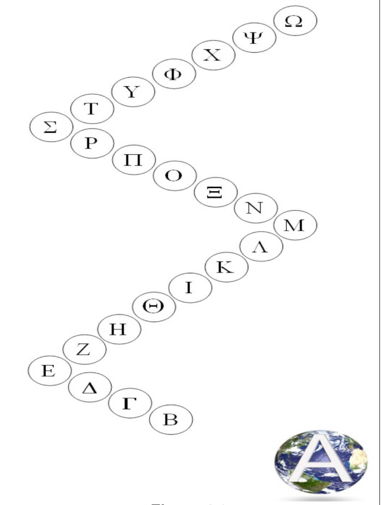
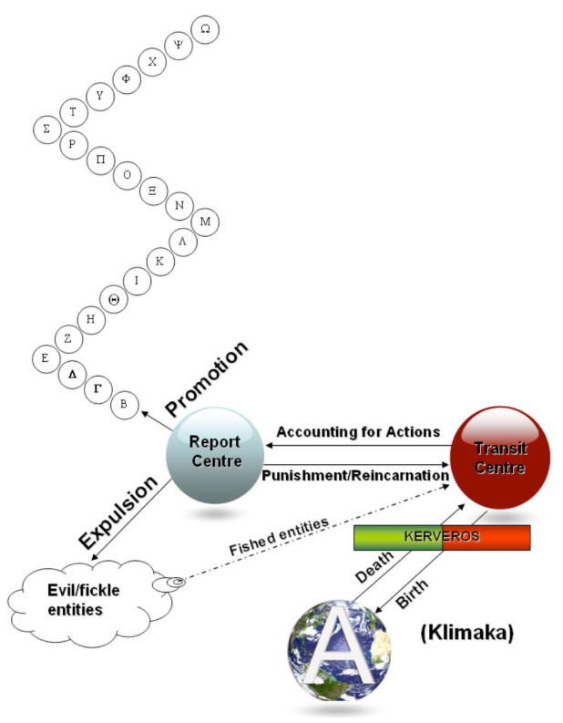
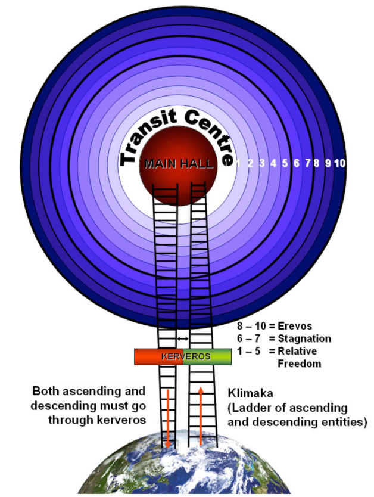
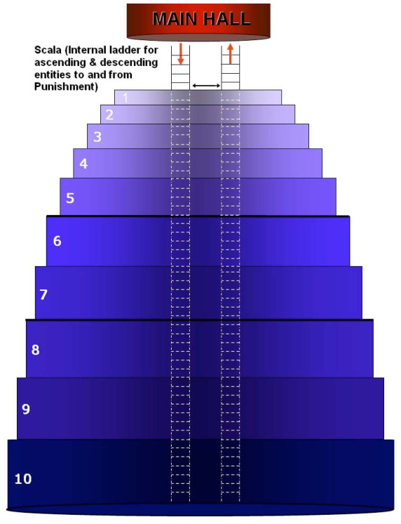
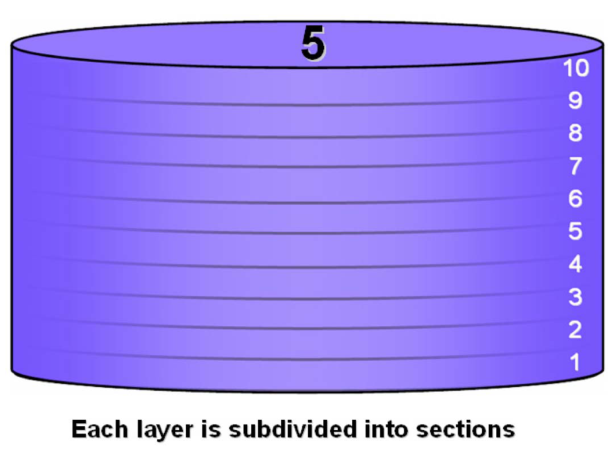
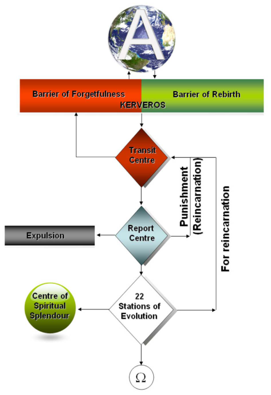
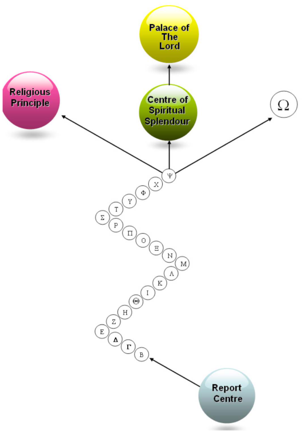
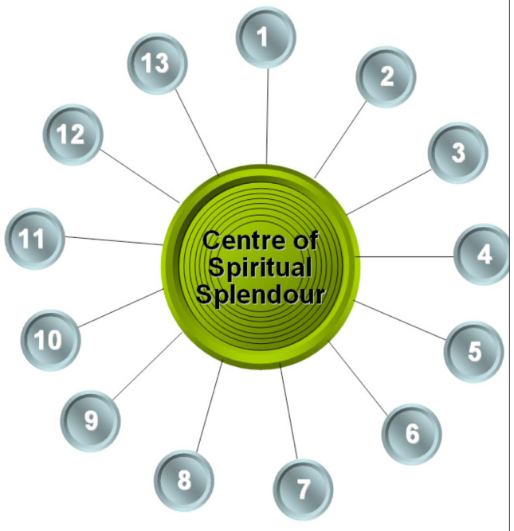
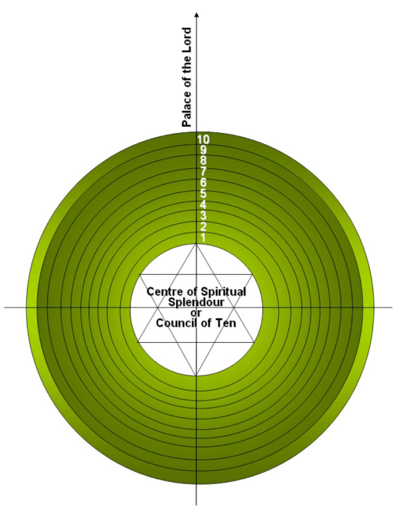
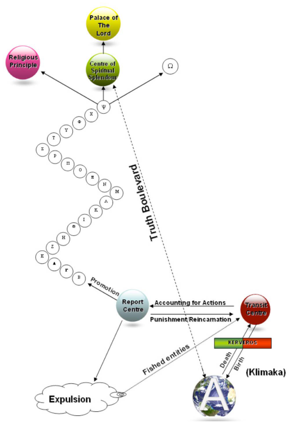

Chapter 4
The Greek alphabet has 24 letters: Α, Β, Γ, Δ, Ε, Ζ, Η, Θ, Ι, Κ, Λ, Μ, Ν, Ξ, Ο, Π, Ρ, Σ, Τ, Υ, Φ, Χ, Ψ, Ω.
4.1 Overview of Heavenly structure
[1-33;]
Let us discuss in general terms the structure of the Heavenly Kingdom and how it operates. The Stations of Evolution consist of 24 Stations from Alpha (Α) to Omega (Ω) corresponding to each letter of the Greek alphabet. In every Station specific complementary education of the psycho- spiritual entity takes place. The Stations are shown diagrammatically in Figure 4.1.
Station Αlpha (which is Earth) is the unique material planet in the universe for human entities. It is the Station for separating the qualities of the psycho- spiritual entities and also the battleground for the combating powers of good and evil. Station Omega (Ω) is the Heavenly Paradise.
Stations Beta (Β) to Omega (Ω) are ethereal Stations or levels that are the various “classes” the psycho-spiritual entities go through to improve and ascend further.
Station Psi (Ψ) is the penultimate Station for the psycho-spiritual entity’s refinement (evolution) and is the most difficult of all Stations. The psycho- spiritual entity’s stay at this Station is minimal.
Station Omega (Ω), the final Station, is also called the “Station of Repose”. It is the Station that we call Paradise. Once the psycho-spiritual entity enters this Station, it no longer returns, via reincarnation, into the earthly life.
The highest psycho-spiritual entities exist in the Station of Repose.
When the psycho-spiritual entity leaves the material world and enters the Kingdom of the Lord, it will pass through two important centres before the next destination is authorised. The first is the ‘Transit

Centre’ also known as the ‘Soul Terminal’ and the other is the ‘Report Centre’ also known as the ‘Centre of Accountability’. These two Centres are shown in Figure 4.2 together with the Stations of Evolution. The connection and relationship between these are explained in this Chapter.
Figure 4.1 24 Stations of Evolution
Apart from the 24 Stations and the two centres stated before, there exist a number of other Centres and Councils. These will be outlined further on in this chapter.
4.2 Station Alpha
[18-56; 18-67; 19-109;]
Birth is the start of the contract between a psycho- spiritual entity and Heaven. It is signified by the arrival/return of the psycho-spiritual entity to the material world to start/restart its education by balancing Good/Evil and soul/spirit. It will eventually ascend to the highest level of illumination. Life starts when the newborn takes its first breath i.e. when it receives a ray of the Divine Energy that is God’s Breath.
Death is the end of the contract between the psycho-spiritual entity and Heaven. Not all deaths are similar and humans attribute different explanations and in some cases generate different circumstances for the actual death.
Each psycho-spiritual entity can be considered as God’s rough diamond that needs to be shaped and polished whilst on Earth. God created Earth so that each rough diamond can eventually shine by repeated incarnations in human bodies, of the same sex, and by the enlightenment (illumination, education) it receives in Heaven between incarnations. The faster the psycho-spiritual entity’s progress on Earth, the more it aids God’s work. In Heaven, the psycho-spiritual entities have to understand everything that has been taught and they need to retain these images (knowledge is given in images) so that when they reincarnate, they can overcome new obstacles and different traps and temptations. This way the cycle of life ‘birth – death – rebirth’ continues. In Heaven (in Stations B (beta) to (psi)) education takes place with the use of images that are not real. They make an impact on the spirit so it can invigorate the soul and strengthen it. This is the way God assists the raising of the psycho-spiritual entities to reach their final destination.

Figure 4.2 Overall Heavenly Structure
Each psycho-spiritual entity’s earthly life, either good or evil, is temporary. The duration of life on Earth is predetermined before incarnation and is part of the contract. The contract cannot be prematurely and unilaterally terminated by the human entity without repercussions. The end date of life is known to the subconscious but not to the spirit. The subconscious seldom speaks freely to the spirit and only then if it receives Divine permission.
A psycho-spiritual entity returning to the material Station Alpha (Earth) is born as a new earthly human entity and is reincarnated with fewer sins. In Heaven the psycho-spiritual entity is taught much to assist it in developing its soul strength in a way to enable it to overpower the spirit. The subconscious within the soul is the secret storage area where the entity’s record is kept. Based on this record the entity is placed in the appropriate position in Heaven when it returns there. A new entity returning to Earth seldom remembers its previous existences, places or events. When it does, this to remind the human entity that the soul does not die, but returns to Earth to fulfil its obligations.
After birth when the new, young human entity has acquired enough strength, it is tested by its surroundings, inheritance and earthly temptations. Man appears on Earth completely free from the Heavenly Leaders’ influence. If he himself perceives in time that he needs them, then through prayer and purity of thought or other means, he connects with them and receives advice and direction. Previous incarnations have no relevance whatsoever to the current one. For this reason, the incarnated entity does not remember them and the spiritual Leaders and Teachers do not mention them as they may have a negative effect on the current incarnated entity.
Prior to its descent to Earth the spiritual Leaders and the psycho-spiritual entity agree on the experiences that the entity needs in order to increase its soul strength. Family environment has an influence on the new entity, even though the newly arrived entity has no soul connection with the family into which it is born. This influence depends on external factors. This way the entity can encounter new experiences for the purpose of training and in order to fill gaps in its knowledge and behaviour. At this point there are three forces
that exert themselves:
(i) earthly temptations
(ii) soul strength
(iii) the soul’s influence on the spirit.
An unjustly killed person will be given a new place on his return to Station Alpha (Earth). The unjust and malevolent person who committed the murder is punished in a different way when he reincarnates. One incarnation does not affect the other because each incarnation is a different life, a new experience and a new appearance (race, colour, religion).
The sins of the souls started with the first sin (ancestral sin). That was the reason the souls were expelled from the Heavenly Kingdom and incarnated on Station Alpha. Their incarnation and subsequent incarnations were designed to assist them to return to the Heavenly Kingdom through continuous struggle between Good and Evil. The psycho-spiritual entities have to balance the forces of Good and Evil. Evil is necessary in Station Alpha for the evolution of human entities since Earth is the great practical educational institution.
Man has free-will to balance and choose between Good and Evil. For example, material wealth and poverty can be considered as two opposite attracting forces. Humans who desire material wealth are attracted to one side and others who shun material possessions tend to become hermits and antisocial. Both inclinations unbalance the entity. The objective is to walk the path between the temptation of wealth and poverty and to conduct a balanced life.
The world of the psycho-spiritual entity is the Spiritual Kingdom. In this kingdom there are many
places for all psycho-spiritual entities. Some remain at lower levels and some at higher. There is a category of psycho-spiritual entities that always ascends. The psycho-spiritual entities that find themselves at the lower levels are unhappy about their situation.
On Earth, it is very easy for the Devil to attract psycho-spiritual entities, even though those entities may think that they are linking with God. In Heaven, it is difficult for the Leaders to attract (fish for) fickle and evil spirits.
4.3 Klimaka
[15-215; 4-202]
Heaven and Earth are connected through an invisible ladder (Greek: Klimaka) called the Klimaka of Ascending and Descending souls. The psycho-spiritual entities descend to Earth to be reincarnated and they ascend to Heaven to return to the Heavenly Kingdom using this ethereal ladder. The place of incarnation of the souls does not depend upon their previous nationality, religion, race etc. but upon their inner progress made in Heaven. Once the ascending psycho-spiritual entities have discarded their human body (died) they climb the Klimaka to the main hall of the Transit Centre. See Figure 4.2 and Figure 4.3.
When the psycho-spiritual entity recovers from the vertigo of death, it is initially lost. It tries to orient itself and if it has any degree of Divine enlightenment then a Guardian Angel or a substitute Angel will come to its aid. In the beginning, it will hear whispers without seeing where they come from. As the entity ascends, it hears sweet whispers that come from the fickle and evil spirits and other whispers that come from its Guardian Angel. The transformation of the psycho- spiritual entity is immense until it opens its
Heavenly Eye (third eye) and then it will start it will start another path. Until this point, the psycho- spiritual entity is lost (blind).
When the psycho-spiritual entity is recalled it is initially lost and does not understand what is happening to it because it still has visions of Earth, is confused and does not fully grasp that it has left Earth. The psycho-spiritual entity travels in a direction unknown to it. As stated, during the journey, various other psycho-spiritual entities (evil, fickle) appear and try to coax it in their direction. It needs to repel all of them with all its resources (soul-strength) otherwise it will slip into the stronghold of Evil.
Most psycho-spiritual entities ascending the Klimaka turn a deaf ear to the urging of these other psycho-spiritual entities. It is difficult for Evil to deceive them because they have recent impressions from the material world and are not easily misled. But Evil can take many guises in order to deceive the psycho-spiritual entities. For example, if you loved an attractive young woman and you were not able whilst on Earth to gain her as your life’s companion, then ascending the Klimaka, Evil takes the form of the young woman you loved and by simulating her speech, draws you to it.
Similarly, if the aim of your life was to acquire a great fortune to enable you to secure the future of your own people but you failed to do so, then Evil will appear with members of your family and will give you a way to enjoy wealth and provide security for your family who rejoice at this; although in reality nothing takes place.
Evil’s deceits are innumerable, but its guile is rarely successful with ascending psycho-spiritual entities.

Figure 4.3 Connection between Earth and Transit Centre
Evil is more successful with the descending psycho-spiritual entities which are more favourably inclined towards it because, through promises, it is able to secure a place in their mind. It can then relax without worrying because it has already bound them to itself.
Upon incarnation and while they are still young, Evil is unable to touch children as it is forbidden by God (Anarhon). However, once adolescence is reached
Evil rises and demands the fulfilment of the agreement that was entered into whilst descending to Earth. That is, to follow it during the whole course of their earthly life. Evil delivers all that it has promised according to the agreement: wealth, glory, conquests etc. Very seldom does a man awaken who has delivered his spirit to Evil. That is, the person who has made the agreement with Evil before incarnation, and then embraces the Heavenly Authority, may deceive the Deceiver (Evil). This case is very rare in life because a man fully absorbed in worldly matters cannot abandon them. The psycho-spiritual entity has to have strong soul-strength and a willing spirit to be able to deceive the Deceiver for the benefit of others.
Take into consideration what is being conveyed to you now, as this is being written into your subconscious so that you can use it when there is a need. These words constitute a safeguard for your entity. All who do not have Divine favour to know the essential mysteries for their entity commit sins and go backwards without the Teachers being able to assist them.
Be careful not to slip, not only while you are returning to Heaven but also whilst on Earth. On Earth the level of temptation is greater since you are earthly. Praise the Lord whose decision it is to communicate these teachings to the ungrateful and forgetful man of matter, so that Heavenly Enlightenment can raise him.
Editor’s summary: 1. There is a ladder that ‘connects’ Earth and Heaven. It is named Klimaka to differentiate it from another ladder (Scala) which is within the Transit Centre.
2. The Klimaka is used by both ascending (returning to Heaven) and descending (to be
3. Evil and His followers tempt both ascending and descending psycho-spiritual entities.
4. Both ascending and descending entities must go through a barrier called Kerveros (see next section and Figure 4.3).
5. Within the Main Hall of the Transit Centre psycho-spiritual entities are directed to go to their next destination.
4.4 Kerveros
[15-217; 2-185]
After physical death, the psycho-spiritual entity goes through a barrier, Kerveros, whilst ascending the Klimaka called the Barrier of Rebirth, also known as Super Memory or Reforming Zone (Figure 4.2 and Figure 4.3). This means that the psycho-spiritual entity regains all its previous knowledge from all previous lives in both Heaven and Earth.
On the other hand, when a psycho-spiritual entity is about to reincarnate (descending entity) into the material world it goes through a zone, Kerveros, that is called the Barrier of Forgetfulness (Figure 4.2 and 4.3). This barrier is so-called because when the psycho-spiritual entity goes through it, it completely loses all its memory, especially all the memories whilst in Heaven e.g. of all images, thoughts, knowledge, emotions etc. The Barrier of Forgetfulness is therefore, the keeper of the secrets of the Spiritual World since these cannot be revealed to humans.
Kerveros is the Reforming Zone and/or the Barrier of Forgetfulness. Nobody can go through this barrier unless they leave behind them their old memory to acquire a new one and in the opposite
direction they regain all their previous memories. During its ascension the psycho-spiritual entity does not forget its life on Earth. If, however, the psycho-spiritual entity is very nostalgic about its life on Earth, the psycho-spiritual entity can become insubordinate and then it becomes a fickle or an earthbound spirit. It floats around in Heaven until it voluntarily enters the Transit Centre. It cannot return to Earth because the pull of the Transit Centre is more powerful.
Editor’s summary: A. Recalled entities (death): 1. After death the psycho-spiritual entity climbs the
Klimaka. 2. The psycho-spiritual entity goes through the
Reforming Zone ‘Kerveros’ (super memory). 3. It arrives at the Main Hall of the Transit Centre
from where it is sent to the Report Centre or is returned to Earth. 4. Further actions are taken as outlined further on.
B. Entities returning to Earth (birth/rebirth): 1. The psycho-spiritual entity as it descends the
Klimaka to Earth goes through Kerveros also called the ‘Reform Belt’ or the ‘Oblivion Barrier’. The psycho-spiritual entity forgets everything of the celestial life and previous incarnations although it is possible in certain cases to remember previous incarnation(s) on Earth. 2. It arrives on Earth at the instance of birth. 3. The reincarnation of the psycho-spiritual entity
takes place the instant that the foetus emerges from the mother’s womb and takes its first breath.
4.5 The Transit Centre
[1-42; 2-11,29; 3-15,20,67,204; 4-105]
The Transit Centre has a circular hall at its centre called the ‘Main Hall’ and around it there are 10 concentric circles as shown in two dimensions in Figure 4.3. Each of the concentric circles of Figure 4.3 can be expanded in 3-dimensions (the same way as extending the cylinders that form a telescope) with the resulting image shown in Figure 4.4 where there are two ladders (Scala) for use by the psycho-spiritual entities. One is for them to reach to their appointed position of punishment and the other to return to the Main Hall for further processing.
The concentric cylinders increase in depth so the larger the number of the cylinder the larger the depth as shown in Figure 4.4, for example, concentric cylinder 10 is deeper than cylinder 1.
If a psycho-spiritual entity is to serve a sentence it is placed in a position within the Transit Centre. Depending on the level of punishment it uses the internal Scala (not the Klimaka) to reach the agreed position (Figure 4.4). There are no special courts or prisons or fire and brimstone. When it is guilty, the psycho-spiritual entity suffers morally and moral pain is far more unpleasant and oppressive than physical pain.

Figure 4.4 Transit Centre in 3-D
The first 5 concentric circles/cylinders (1,2,3,4,5) allow relative freedom of movement for the psycho- spiritual entities.
The last 3 concentric circles/cylinders (8,9,10) constitute the Erevos (deep darkness). The psycho-spiritual entities placed in the middle 2 concentric circles/cylinders (6,7) stagnate.
The psycho-spiritual entities being punished inside Erevos are unable to communicate with other psycho-spiritual entities unless the former do not repent and they leave to enter the ranks of the Evil, in which case they have no right to use the Scala to
NOTE:

reach the Transit Centre’s main circular hall. They float around. Often they circle around the first layer in order to attempt to seduce the psycho-spiritual entities that are descending to Earth.
The psycho-spiritual entities which accept their punishment go to one of the sub-cylinders (slices) within a concentric cylinder (e.g. concentric cylinder 5 sub-circle (slice) 7) according to their punishment. The greater the punishment the darker the circle i.e. the larger the number of the circle. (Position: concentric circle 10, sub circle 10 is the darkest).
Figure 4.5 Ten layers (slices) for each Concentric Cylinder- shown in cylinder No 5.
All psycho-spiritual entities, punished or not, float. The circles (cylinders) do not exist in the Heavenly universe.
They have been provided diagrammatically to assist in understanding the structure of Heaven.
Up to the 5th circle/cylinder within the Transit Centre the psycho-spiritual entities can proceed to visit other psycho-spiritual entities in darker layers with
permission that is granted depending on their behaviour although the reverse is not allowed. Psycho-spiritual entities in the 6th and 7th circle/cylinder stagnate without complaining in order to win the Lord’s favour. At a specified earthly time (up to one year) the Lord visits this sector and gives promoting grades to the souls enabling them to improve their evolutionary position within the Transit Centre.
The Transit Centre or ‘Soul Terminal’ constitutes the linking point between the material and non- material (Heaven) worlds as shown in Fig 4.3. This centre is both the centre for ascending (returning to Heaven) and descending (to be reincarnated) psycho-spiritual entities. From here, the psycho- spiritual entities go to the Report Centre or ‘Centre of Accountability’ for self judgement (Figure 4.2) from where,
(i) If they receive promotion they continue to higher Stations (B – ) to be further evolved
or (ii) They return to the Transit Centre to be reincarnated straight away to Station A (Earth)
or (iii) If they are found guilty of many sins they return to the Transit Centre to serve their deemed sentence within the levels of the Transit Centre and to be taught about their duties in their future reincarnation. After completing their sentence they will wait for their turn to descend to the material world as new human entities. See Figure 4.2.
When one feels ill and everything is spinning around, one needs to rest to recover one’s normal senses. The same thing happens when a soul is recalled. When in Heaven, it recovers. It is impossible for it to appreciate where it is. In the beginning, it is facilitated by recognition of beloved
persons and it wonders if it is dreaming or not. To get rid of this feeling, which automatically brings nostalgia for the world, it has just left, and so as not to feel bitter, it sees as mirages part of its earthly life, which in reality does not exist. It is not possible in the ethereal world for earthly objects such as gardens and flowers to exist.
This is stated here so you can understand the forethought given by Divinity for every created entity. This does not happen to psycho-spiritual entities that have developed with celestial help. When they die they come into direct contact with friends, acquaintances and relatives. They sense that all the entities are brothers and sisters and become calm. When they become accustomed to their new surroundings they take the following path:
When a person dies and he has prepared himself and understood the Spiritual World his psycho- spiritual entity goes towards Heaven (Transit Centre) and does not look back. If he is ignorant, then his psycho-spiritual entity stays with his dead body and tries to speak to other humans but nobody will pay attention to him because he is invisible to earthly eyes and ears.
When the psycho-spiritual entity is recalled and it leaves its body, for three (3) days (time as measured on Earth) it hovers around Earth or around its body. This depends on the psycho- spiritual entity. Time belongs to Man because he has memory. If the spirit had a strong affinity with the material world then it remains in the same room with its dead body, otherwise, it rises and from there it sees, listens and in a way empathises with the sorrow of those grieving around its body. It is possible that it may appear in dreams or that it may materialise during this time. This depends on its capabilities.
After this, it ascends and for nine (9) days it moves around the Transit Centre (Soul Terminal) whilst it discards the last remnants of its earthly life. For forty (40) days after leaving the earthly body it remains in the Transit Centre where it receives instructions. It then goes to the Centre of Accountability (Report Centre) for judgement. After this it is assigned the place that its own conscience has determined.
Three (3) months is sufficient for the separation and recollection of the earthly life. In six (6) months, if it has been assigned a good place (in layers 1-5) within the Transit Centre, it can establish communication with fellow souls.
Some religions observe religious services to coincide with similar timings for the psycho-spiritual entity’s ascension to Heaven.
Supplications, from entities still on Earth, may be taken into consideration when the dead person does not have too great or too many sins. The fewer mortal sins committed on Earth, the easier it is to climb the Scala of Soul Richness (Scala = Ladder in Latin) from the Main Hall within the Transit Centre. See Figure 4.4.
The more powerful one is on Earth the more difficult it is to climb this ladder.
Many unknown humans enjoy eternity whereas many meritorious people well known for their religious commitment remain at the same point as the lowest of all. There are no secrets in Heaven. The Law of God (Anarhon) is very strict because, before creating the World, He established the Laws. A Law is an idea (concept). It has validity and is enforced automatically.
It is not something abstract, as you understand
ideas, but Laws are energies that act on psycho- spiritual entities in an unknown manner. They belong to the Values of Heaven.
4.6 Centre of Accountability
[15-221]
As discussed, when the Divine Authority recalls a psycho-spiritual entity, it will go through the Reformation Zone (Kerveros) on its way to the Transit Centre. There, the psycho-spiritual entity slowly understands its new situation but it has an intense feeling that it exists between the visible and the invisible. This is because the change in its status is not sudden, due to the grace and providence of God. After 40 days, the psycho- spiritual entity decides if it is worth assuming a position in Heaven in order to atone for its actions or whether it should, on its own, follow the darkness and become an evil or fickle spirit. This decision is called “accounting for”. From the Transit Centre, the psycho-spiritual entity goes to the Report Centre or ‘Centre of Accountability’, as shown in Figure 4.2 to account for its actions and there, it is judged by its own conscience. When the spirit pleads its case the strict prosecutor of the psycho- spiritual entity is its own conscience (soul).
The report is not given in front of judges. The psycho-spiritual entity accounts to itself. In other words, its spirit is checked by its own conscience that is now freed from the bonds of matter and is no longer subordinate to the spirit. Conscience is a function of the soul and therefore never errs. This is why its check on the spirit is very accurate and impartial. As stated, the psycho-spiritual entities judge and punish themselves.
The spirit has no longer the power to give excuses for its actions. A bad spirit feels like a criminal
deprived of all destructive means. A good spirit feels great relief and joy, since its decisions agreed with the advice given by the conscience and it now realises the correctness of its actions. The conscience compares and balances the good and bad actions of the psycho-spiritual entity without mistake. If there are only slight residues of sins remaining, these are erased due to the grace of the Divine Law. If the residues are large, the entity returns to the Transit Centre in order to suffer the punishment determined by its conscience. If there are more good actions than evil ones, the psycho- spiritual entity proceeds to a higher Station of Heavenly training (evolution).
The spirit can willingly accept the sentence passed by its conscience. Nobody can force the spirit to do this, because the free-will of the spirit is a regulation of the Divine Law. If, however, a spirit is extremely insubordinate, does not recognise its mistakes and does not accept its sentence, it is driven away from the Heavenly Kingdom and becomes a fickle or evil spirit. The soul passes the sentence but is forced to follow the spirit to its place of punishment because soul and spirit are inseparably bound into a single psycho-spiritual entity. Thus, there are three directions from the Report Centre/Centre of Accountability (Figure 4.2) for the psycho-spiritual entity to follow:
a. Promotion to a higher Station b. Return to the Transit Centre to either serve its punishment or be directly reincarnated. c. Expulsion from the Heavenly Kingdom
4.7 Within the Transit Centre
[1-46; 2-113]
The flowchart in Figure 4.6 gives a summary of the process described.
In the ethereal world many trips are taken by able psycho-spiritual entities to faraway stars unknown to mortals. The stars whose constitution is totally unknown are beyond man’s imagination. Many travellers meet each other and describe miracles that are incomprehensible to the human mind. When a psycho-spiritual entity ascends, its speed is multiplied and it sees many things that others at a lower level cannot see.
A large number of souls depart Station A (Earth) and go to the Transit Centre but only a few of them will enter other Stations including Station B (beta) through the Report Centre. Placement into a Station is made according to the psycho-spiritual entity’s actions on Earth. The others float until the Divine Authority takes a decision regarding when the entity is to return to Earth (reincarnate). This may take from years to centuries.
As stated above, in Heaven there are layers and Stations. Depending on the psycho-spiritual entity’s burden of sin it will hover in a higher or lower layer. That is, an entity of weight five cannot proceed to layer four. On the contrary an entity of weight four can descend and meet an entity of weight five. This is as long as it is the will of the entity with the heavier burden five, then the lighter, as if by magic speeds to meet it. Any movement between layers requires permission from a higher authority.

Figure 4.6 Flowchart
If as a human entity, with the permission of a Heavenly Authority, together with vision from your third eye you ascend mentally into the ethereal world, you will find yourself in an immense ocean of souls and you will be unable to distinguish the layers. You would understand this as being one ocean because humans are not able to judge the position of each psycho-spiritual entity. It is forbidden for a psycho-spiritual entity in Heaven to indicate its stage of evolution even though the human entity has asked for it. It is not possible to obtain the whole truth from psycho-spiritual entities in lower layers even if there is a grain of truth.
The layers that are stated are diverse. When the psycho-spiritual entity arrives at a specific layer and has been elevated, it is transferred to the Station that has been determined and from there the path is direct. Very few humans (mediums) who have the gift of Divine grace to enter heaven can do so without going through the Barrier of Forgetfulness and Super Memory. Even so, they are not able to grasp the whole celestial life and to bring it to Earth. They have a very fine perception of the enlightened words of very few psycho-spiritual entities. Heaven is an unknown State for mortals, and it has its reasons that the Heavenly Leaders do not allow them to transmit information extensively acquired whilst visiting Heaven.
The Leaders proceed to each layer and with their enlightenment transmit the meaning of their messages, analogous to the spiritual understanding of those being taught.
4.8 Hell, does it exist?
[17-220]
Unfortunately Man disputes the existence of Hell and Paradise. As day and night exist, so do Paradise and Hell. But what is Paradise and what is Hell? In future times we will understand the true meaning of Paradise. Currently we are unable to grasp its abstract meaning. You will sense Hell in both Earth and Heaven. The punishment of this Hell is moral/ethical and it pressurises the soul so as to create anguish.
It is very silly to teach that Hell has fire and brimstone. In Heaven where psycho-spiritual entities float there are no such physical replicas. Monks from the Middle Ages invented these ideas. The punished psycho-spiritual entity will prefer to
be burned rather than suffer the moral/ethical anguish as punishment. However, its sentence for all the wrong that it has perpetrated is not forever, as stated by the spiritually uneducated. There are no time limits for punishment from the earthly point of view, because time does not exist in Heaven. God’s Love towards His creations is so great that many times He prefers to recall an entity rather than let it fall into greater sins. God does not punish without reason but having foreseen what may happen to an entity can relieve the human of the worst situations that can befall it.
The Church Fathers have given magnificent lessons on this subject. But as humans, they have erred in certain points of the lessons. There are many reasons for this. It is unnecessary to debate and discuss the current understanding of Hell since today it is used to threaten fellow man and take advantage of him. Only by your perception will you agree or disagree with this.
4.9 Punished entities
[15-222; 2-72]
In Heaven all entities know the Laws and no psycho-spiritual entity breaks them, except for some who have then to proceed to the darkness of Erevos. The psycho-spiritual entity remains there and develops, in order that its spirit receives teachings from the Teachers who are not obliged to descend to the depths of Erevos to teach. When the psycho-spiritual entity goes to the special halls for the punished, it is blind, it does not see and when the teaching finishes, it returns to the Central Hall of the Transit Centre. Entities with a great number of sins are placed in darkest Erevos. There, the situation is agonizing.
The punished entities are ranked in gradations of darkness, see Fig 4.4. This does not mean that
darkness exists but that the entities are deprived of the psychic sight from their third eye. The deeper they descend the Scala, the less they can see until they reach the depths of Erevos. There they are totally blind.
The circles around the Main Hall in the Transit Centre, where the punished psycho-spiritual entities are placed are the real Hell of Heaven. The fire and cauldrons of Hell are, of course, mythological fiction because no material objects can exist in Heaven. Therefore, the Heavenly punishments can never be physical but are purely spiritual or, to be more correct, of the conscience. The conscience punishes the entity through qualms and through the deprivation of vision from the third eye.
The purpose of the punishment is not to avenge but to purify the psycho-spiritual entity. The unbearable pressure of conscience causes the pain, which is much greater than any physical pain. This horrible punishment is necessary for the atonement of the sins that the entity has accumulated.
The punished entities are not stagnant in their circle/cylinder forever. Through atonement, they gradually proceed to lighter levels. Attending to the teachings of various Teachers facilitates their ascension. Step by step, they reach the central Main Hall of the Transit Centre where they await the Lord’s decision for their new incarnation. In Heaven there exists infinite love for all the children of God. The sinners suffer much more in Heaven than on Earth. Even though on Earth you are able to avoid punishment, it is impossible to avoid the Law of Justice and punishment in Heaven. Punishment on Earth is preferable to punishment in Heaven.
4.10 Fishing the fickle spirits
[18-67; 18-44]
On Earth it is easy for Evil and his daemons (evil spirits) to attract human entities irrespective if the humans think that they are interlinked with the Divine. If we examine their qualities, we will discover that not only are they not what they think they are but they are also, in fact, collaborators of Evil.
In Heaven not all good psycho-spiritual entities are able to fish fickle spirits. The Leaders, despite their heavy workload have a way of fishing fickle and strong evil spirits and of purifying them and, following appropriate teaching, returning them to Earth.
We stated that within and around the Transit Centre there are innumerable psycho-spiritual entities:
• Psycho-spiritual entities awaiting promotion to a higher Station.
• Those that have not been awarded a higher position and that await reincarnation.
• Punished psycho-spiritual entities that have confessed and have accepted their punishment.
The Teachers fish a large number of evil spirits that now willingly accept their punishment and enter the Transit Centre. This is one of the great missions and work that the Heavenly World undertakes. Like a magnet, the Teachers draw entities deemed appropriate for enlightenment and provide them with Divine ambrosia, as this is God’s Will.
4.11 The Alpha to Omega of evolution
[19-109; 15-223; 10-15]
The reason for the Heavenly teachings is to
prepare the groundwork in order to enhance your soul strength. They also convey many small details that are essential knowledge for you so you can be ready when you leave your bodily garment (die). Educate your spirit as much as you can whilst you are on Earth, because it is more difficult to do so in Heaven where you are not interested in practical application but only in theory that becomes difficult without practice.
The 24 Stations of evolution (A-) are some distance apart (as measured by Heaven) which is a measurement unknown to human perception. The Leaders present the lessons. In the Transit Centre, independent of their duration of stay, the psycho- spiritual entities, depending on their position, are taught how to expand their understanding before going forward with subjects inaccessible to them such as the teachings of the Leaders to their brothers on Earth. This celestial work is enormous and cannot be easily understood by earthly entities that are somehow obstructed by the Earth’s temptations.
To give us a more tangible view, the graphical picture in Figure 4.7 may assist. The Stations are connected to the Report Centre and in Heaven they look much like the Greek letter (sigma) or vertebral column. Each Station has its own speciality and degree of difficulty. It is not as on Earth, where the forces of good and evil spirits battle each other. Since there is no matter in these Stations, the hardships of the entities are purely of a spiritual nature.
Since there are no contrasts or opposing forces in the Spiritual World, progress there is usually very slow. If an entity wishes to ascend the scale of evolution faster, after a certain point in its evolution, with permission, it can reincarnate on Earth with a specific mission. Depending on the fulfilment of its
duties and the success of the mission on Earth, the entity can then be promoted through several Stations. If it fails in its mission, it remains at the same Station. It does not fall back to a lower Station.
The psycho-spiritual entities can be promoted in the Reporting Centre.
When a human entity accomplishes precisely everything it should know about good and virtuous actions, after its last recall, when it arrives to account for its actions it is allocated into Station Β (beta), Γ (gamma), Δ (delta), Ε (epsilon) etc according to the entity’s quality. When it arrives at the penultimate and most difficult Station Ψ (psi), and emerges triumphant, it can enter the final Station Ω (omega), the Spiritual Paradise (Station of Repose or Heavenly Paradise) and it is able to rest there at last. However, there are two other paths from Station Ψ (psi): one leading to the Centre of Religious Principle which will be discussed later and one leading to the Palace of the Lord (Soul Paradise) via the Centre of Spiritual Splendour. See Fig 4.8.
As stated, The Spiritual Paradise is Station Ω also called The Station of Repose. The Soul Paradise is the Palace of the Lord into which, until now, very few have entered. The Centre of Religious Principle will be discussed later.
When a psycho-spiritual entity with a good record of behaviour is recalled from Station Α (alpha) it will be transferred to a higher Station.
Station (omega) Is also called:

4.7 Sigma or vertebral column - there are 3 destinations from Station Ψ (psi)
In Station Γ (gamma) it acquires the knowledge of Faith; after Station Δ (delta) the entity knows the meaning of Kindness and Goodness; in Station E (epsilon) it acquires Serenity; and in Station Z (zeta) it is in possession of Humility.
When the entity is in the sixth, Station Z (zeta), it automatically becomes a member of the Heavenly Kingdom and the psycho-spiritual entity participates in the Council of the Lord. There are many more Stations to traverse until it reaches perfection.
The penultimate Station (Station (psi)) is the most difficult. It is even more difficult than Station A. The duration of stay in Station is minimal. Here the entity is tested against the temptations of all the Stations, including Alpha (Earth). If the time period for this trial lasts longer than necessary, the unbearable conditions will nullify it. The same way as when we complete a beautiful piece of furniture we polish it, the same action occurs with the psycho-spiritual entity in the penultimate Station.
In Paradise absolute tranquillity, peace and indescribable happiness reign. The highest benevolence of Divine Breath for a newly arrived psycho-spiritual entity to enjoy exists there. God confers with it and it learns the Mysteries. Those in Paradise are able to follow the Words of the Lord in His Chamber of the Souls (Council of the Lord)from a special position. Their kindness and good deeds brought them into this place of rest. Their spirit has submitted to the soul and they have embraced goodness. With the initiative of the soul, both spirit and soul have been raised.
Those psycho-spiritual entities returning to Earth from the 22 Stations do not gain accelerated promotion to a higher Station while they are in Heaven, but can do so on Earth. For example, from Station B the reincarnated entity has the possibility on Earth to gain 4, 5 or even 10 Stations. Therefore, returning to Heaven it is going to find itself on the 12th Station, if it gained 10 Stations whilst on Earth (2+10).

Figure 4.8 Centre of Spiritual Splendour
Only teaching takes place in the Stations in Heaven. As in everything there are exceptions, similarly for the entities in various Stations. One of these exceptions is, if they have strong soul strength and they are sad because whilst on Earth they ignored the spiritual world, an opportunity is given to them while in Heaven, to transmit teachings to humans. These teachings are enlightening for humans and the psycho-spiritual entity gains one or two Stations.
4.12 Station (omega)
[4-160]
What is Station (omega)? It is the final Station where psycho-spiritual entities rest in eternal life and enjoy all the blessings that the Lord offers to those who are worthy, having passed through so many obstacles and temptations and having reached here. Station (omega) is also called the Harbour of Eternal Peace or Station of Repose.
You know Station Omega by reputation and you call it Paradise. Do not think that Station Omega has flowers in bloom, fruit trees, sweet-singing birds and a view of indescribable beauty as described by authors of an old and obscure period. Station Omega is a celestial space within which psycho- spiritual entities rejoice in their absolute freedom. Absolute, because through many labours and toils they have reached perfection, so that they can control their movements according to the Will of God (Anarhon). The Station of Repose is free from all material substances. It is ether, and yet within its enclosure the psycho-spiritual entities have the impression of something beautiful, pleasant and of an idealistic world because the intense Love of the Creator permeates throughout.
You, with all the comforts of earthly life, the amusements, discussions and pleasures, lack the indescribable blissful life of this Station. Many Teachers, Leaders of the Governing Authority, Angels and other Divine entities visit Station Omega, the Station of Repose. In it, there is a continual sense of Universal music. It is through this that earthly composers are inspired without their knowledge. We say “sense” even though the psycho-spiritual entities cannot sense. There is something else that gives strong and continuous impressions. An impression is a fleeting image,
whilst for the residents of Station it is permanent, diverse and indescribable. These impressions are called “concepts”, whereas in the earthly world concept means something abstract. The difference between words and concepts in the two worlds is enormous.
Praise God the Great Creator who has taken care of everything so Man can attain perfection and can marvel at the wonders of Heaven and at His unbelievable wisdom that has enlightened us through the Holy Spirit. The more you cultivate the spirit, through Divine enlightenment, the more the intensity of the light it produces grows, so departing from Earth you can have your own illumination and do not succumb to temptation.
In the space of Paradise there are many psycho- spiritual entities but not as many as there should be even though entry to this space is achievable. Station Omega is the Palace of the Soul.
4.13 How you will rediscover the lost
paradise [4-35]
As discussed there is only one Paradise and it is the final Station, distinguished by the letter omega of the Greek alphabet. In Heaven it is called the Station of Repose.
Before the Creation of the Worlds, all souls were concentrated there and lived an enjoyable, undisturbed and ultramundane life. However when the revolt of the Evil Spirit reacted on the souls and deceived them, they were expelled from the true Paradise for their disobedience. They made their appearance in the reflection of Paradise i.e. in the earthly Paradise Atlantis, which excelled in natural beauty. For many centuries Man has been ignorant
about the location of the lost city of Atlantis, the earthly Paradise, and has placed it in many and different parts of Earth.
What is lost cannot be found. Unless you lose your temporary life, you cannot rediscover what has been lost until after you have negotiated the long road for cultivating your psycho-spiritual entity through the various stages of the Stations of perfection and of sanctifying of your entity.
In this earthly world, there is time for those whose understanding is sufficiently developed to overcome the distances between the various Stations and to speedily enter the Station of Repose where they will hear the hymns of the Angels glorifying God the Great Creator of the endless Heaven.
Within Heaven the Great Creator created unknown worlds and a material workshop called Earth, for the cultivation (evolution) of the psycho-spiritual entities.
You will not find anywhere Paradise as described in the Old Testament. The Bible gives earthly images for the understanding of Man, but these images are symbolic, that is to say, they contain the truth in part. Those who composed the Bible or rather, the Old Testament, were inspired Jewish rabbis (priests) who succeeded up to a certain point in conveying the symbolisms that were the most important of their time. Today, by stripping it down and leaving only the truth you realise that the Old Testament is made up of chapters containing mythological composition with hidden meanings in order for the truth to be hidden from desecrators.
When a mountaineer intends to climb mountains he prepares himself with special clothing and equipment. Why? Because they will assist him to
climb the steep mountains. Similarly men who wish to enter the Station of Repose ought to prepare themselves with special clothing and equipment to assist in their aim. What clothing and what equipment? All these you will perceive by yourself since it is all written in these new texts.
The Paradise that you poetically imagine cannot be created on Earth it is the Utopia of weak poets. As long as there is conflict of opinion amongst men over a number of subjects, it is impossible to see Paradise on Earth. This is just, otherwise how would you be rewarded in Heaven? In the ether of immortality and with total freedom how are you going to rediscover the lost Paradise? You can achieve this through cultivating the soul and its imposition on the spirit. Be assured that you will rediscover it.
In Heaven, the Angels are countless in their Orders (battalions) and there are many Leaders each according to their speciality e.g. in the moral-ethical order there are many Leaders. Ethics is divided and subdivided into many branches. Each Leader or Teacher has his own particular speciality and through good conscience he does not interfere in the speciality of another.
The grandeur of Heaven is realised when all gather in the Council of the Lord. There nobody sees God (Anarhon) but they sense His presence through His brilliant Light and they rejoice. All receive new inexhaustible powers from His perpetual Source, which is His Own Son and from the Holy Spirit.
Be assured that you have Paradise within you but you have lost the key. The key to what? Look for it and you will find the entry to Paradise within you.
4.14 Centre of Spiritual Splendour
[1-39; 15-229]
The Centre of Spiritual Splendour, ‘Radiance’ or Council of Ten, shown in Fig 4.8 and Fig 4.7, is equivalent to the control tower that is so necessary at our airports. What role does it play in Heaven? This is something too unbelievable to even contemplate. According to the Heavenly Authority all the directives to the instruments of Heaven are transmitted from there with great accuracy so that there are no mistakes. This Council has ten members plus their assistants. The members are made up of Teachers and Leaders. They are very powerful and have priority for ascendancy to the Palace of the Lord. When a member ascends to higher levels an equivalently capable new member replaces him.
The earthly entity is examined by each of the 13 Councils and then this examination is cross- checked by the Centre of Spiritual Splendour or ‘Radiance’ (Council of 10) and from there transmitted by waves to its destination, through the vibration of the Spiritual Radiance.
Only the Great Teachers are able to approach this Centre. When you receive a message or information from Heaven it is transmitted from the Centre of Spiritual Splendour ‘Radiance’. And because the receiving medium from Earth often asks for contact with different souls that are not able to enter this Centre, the Spiritual World may oblige and go into another chamber to the requested soul and it is able to communicate. When the earthly Station comes into contact with any psycho-spiritual entity, the earthly Station needs to get permission from the Leader of the Centre.
The Lord or Supreme Being is the direct transmitter
of his Father’s Will. That is to say, with the foresight of the Father He directs His co-habitants with Him to His Palace, to His Teachers with the great Leaders and Teachers who up till now number seven and it is unknown how many there will be in the future. The Council of Spiritual Radiance as you know consists of ten Leaders who have direct contact with Station Alpha. They receive directions from the Lord and His collaborators, the Stars of His Palace and, in agreement with the Leaders of the other areas, give directions. Very seldom, unless it is necessary, do the Stars of God interfere.
All these Councils, big or small, have the same authority in their areas. The Council of Spiritual Radiance has special powers relating to Station Alpha. Each Leader or Teacher has a special area. This way nobody interferes in the areas of another. This is not because the Teachers do not know how to answer but it would be disrespectful of them to interfere in the area of another. The Spiritual World has principles that are kept with high precision.

Figure 4.9 Centre of Spiritual Splendour (Radiance) or Council of Ten
Only the Holy Trinity understands everything. Therefore the Light of Love, of Knowledge and of Truth constitutes everything in the Creation.
4.15 The 13 Councils
[15-230; 1-41]
Under the jurisdiction of the Centre of Spiritual Splendour fall 13 smaller Councils of equal status connected with it. They have specializations among the human entities. The 13 Councils of the universal world have their main base in the Centre
of Spiritual Splendour as shown in Figure 4.9. In reality the 13 Councils do not form a circle but are scattered in different parts of the ether. Figure 4.9 helps with our understanding.
The 13 Councils represent the Lord together with his 12 disciples. There are the 12 thrones that the Lord promised them in His celestial kingdom according to the New Testament. The Lord does not separate Himself from His co-workers. He remained as on Earth, a brother, without being influenced by His higher position as God.
Each Council has 10 Leaders, whose work is complementary and thus perfect. The Honorary President of each Council is one of the Disciples of the Lord. In order for the Lord not to distinguish his position from the brotherhood, he remained President of the 13th Council, proving thus that humility constitutes a link of the brotherhood. Do not think that the Honorary Presidents sit on the throne and give commands as on Earth. They have duties outside their Council.
Each Council consists of Teachers of great magnitude. The Lord, of course, bears in his hands the sceptre of the Spiritual World, as Son of His Father. He is, nevertheless, equivalent to His Disciples in the presidential thrones of the Councils.
The 13 Councils are:
1. Executive Council, which acts, having received instruction from the other Councils. 2. Council for Estimation of our acting forces on Earth i.e. it is the sphygmomanometer that measures the pulse of our strength that influences Station A. 3. Penetration Council is for penetrating into the disposition of entities. 4. Return Council, which returns the entity to the
same position from where it started. 5. Council for Organic Refinement of the strength of entities. 6. Council of Entities’ Disposition and of the effect on the thread of reception. 7. Council of Time for the duration of stay of beings in a specific Station. 8. Council of Spiritual Anomalies for certain entities. 9. Council for Regeneration by necessity for certain entities. 10. Council for Examination of the essence of entities. 11. Council of Perversion based on physical conduct. 12. Research Council to discover the best entity for ascension. 13. Council of Special Compensating Powers.
These Councils are valid for all the worlds of the Universe.
The work of the aforementioned Councils is fine, precise and of infinitesimal duration. They constitute altogether the mechanical part of the Heavenly Kingdom. Their combination is unknown to human entities as it is for other worlds.
As you know, the Centre of Spiritual Splendour (Radiance) differs from the above in that its Leaders have precedence in their access to the Palace of the Lord.
When an entity is recalled (dies) the 13 Councils examine it from all aspects, even the most unimportant ones. The results are transmitted to the Centre of Spiritual Splendour and the positives and negatives of the entity are sorted out. When
the entity accounts for its actions to its conscience in the Report Centre, its conclusions must match the final results that have been drawn up by the Centre of Spiritual Splendour. The entity is either promoted to a higher Station or is returned to the Transit Centre for punishment or reincarnation.
4.16 The Palace of the Lord and His Stars
The Palace of the Lord is the Paradise of the Knights of the Spirit and of the superiority of the soul. The superiority of an entity is the balance of the soul and the spirit. The Palace of the Lord is very difficult but not impossible to enter. The preparation of an entity to enter it depends on the good and pious deeds carried out whilst on Earth.
Until now only seven (7) entities have entered the Palace of the Lord and they exist in a state of Spiritual Enlightenment (nirvana). These entities are called ‘Stars of the Lord’ and they are His Immediate Assistants. The Highest Authority, which is God, is called ‘Divine’.
4.17 The Council of the Lord
[4-176; 15-234]
The Council of the Lord is the Parliament of the Spiritual World. To understand what the Council of the Lord is you have to bear in mind that all the images transmitted from this Council would be obscure unless they are given in earthly terms. This Parliament is where the Lord and the Leaders discuss issues for the benefit and information of the audience who are given the opportunity to discuss the decisions of the Governing Authority amongst themselves. During the meeting of the Council of the Lord, the Leaders present speeches, and questions and other subjects are raised by the
audience.
The Lord answers all and informs everybody through His Word on all subjects except for those that are classified. These He discusses only with His Stars. The Council is a Palace where all Spirits of the Heavenly Kingdom come together. The Great Leaders speak and questions are put and answers given to all participants. All these are transmitted with earthly images, in order for us to understand the greatest of works that take place in the Spiritual Kingdom. The Council of the Lord is the Supreme Command of Heaven. From here the Divine Light is transmitted to Earth.
All psycho-spiritual entities from Station Z upwards can participate as audience in the Council of The Lord (Parliament). Apart from the Teachers, the others do not participate in the discussions but they are informed and they follow them. The Lord blesses all participants and thus they are rejuvenated and their soul strength is increased.

Figure 4.10 Overall Heavenly Structure
The coronation of the Leaders takes place with grandeur in the Council. A special place is occupied by The Mother of the Lord who is surrounded by Her escort that consists of a few female entities worthy of their destiny. The virtuous women from Station Γ (gamma) follow the meeting from a special “gallery” without taking part in the proceedings. Not because they are not worthy but as B entities, females, have a different destination in Heaven than A entities (males).
4.18 The past, the present and the
future worlds [4-53]
The world of the past started with Creation and lasted until the Enlightenment of the Lord. Today’s world is from the Lord’s Enlightenment until a point beyond our life. The world of the future starts from the unknown point until the end of the World. That is, we have two vast periods: the Ancient and the Future World. The period in between is the smallest and acts as a link between the two vast periods.
Countless numbers of psycho-spiritual entities migrate from one world to another, while other psycho-spiritual entities reincarnate in new bodies. The cycle of returning and departing psycho- spiritual entities is called the “Cycle of soul refinement”. In the Transit Centre many psycho- spiritual entities congregate because only a few are able to traverse the path towards the Stations of soul refinement (evolution). In spite of the Leaders’ efforts it is difficult for us to fully understand the process.
The world of the past was a primitive one with little knowledge and with animal instincts, so wars in those distant epochs were inevitable. Sometimes nature and at other times Man completed the catastrophe. Only a few were inspired unknowingly by the Divine Principle about the personification of deities of their time until the appearance of the Lord who first taught about Heaven and the immortality of soul as an eternal extension of Man’s life as a Heavenly entity. This intermediate epoch of today illuminates the darkness of the past and searches in depth to discover the beginning of Creation. Such activity is useless.
The light by which you search is indeed the light of knowledge but not the light of Divine Grace. For this reason you will never know the beginning of creation unless you are enlightened by the true light of the Heavenly Kingdom which will provide you with descriptions unknown to you of the first Creating epoch. From this intermediate epoch a number of men have proven themselves worthy of the understanding of Heaven and have occupied distinguished places in the Invisible Kingdom. Man’s knowledge is never extinguished. On the contrary, it increases in Heaven provided that it is pure and is guided by faith.
Now we come to the World of the future. What will it be? It is going to be a spiritual world but lacking in nobility of the soul. Thus, from the New State created by the Spiritual World emerging somewhere on Earth, words as arrows will be thrown so that the chariot of the Texts of the Spiritual World will come and, as a second Apollo, enlighten the two hemispheres that will be progressively absorbed into the bosom of the State whose sovereignty will grow and grow. Therefore Man will find a comfortable life without anxieties and with resources for cultivation not only of the soul but also of the spirit, that is, to find the balance. This is exactly the aim of the Spiritual World, so that the psycho-spiritual entities arriving in Heaven do not stay in the Transit Centre or at least minimise the time for those who do stay in order to proceed to the Stations of soul refinement. The Teachers also prepare the preparatory world through which you will be admitted into eternity.
Do not possess the incorrect idea that a dead person does not return to Earth. Not only does he return but he reincarnates repeatedly to completely purge all the earthly sins. Assistants help the Teachers to accomplish this heavy work. Some of the assistants have already been sent to Earth and
others will be sent in time from other Stations to shorten Evil’s injustice on the just. We are proceeding towards a better society that Heaven will invigorate with enlightenment given through these texts. The ignorant are not aware of their fate and they rejoice in their earthly life. If they knew what awaits them they would prefer death. But although death liberates man from pain, it does not liberate him from his sins.
The seeker will find. Therefore my brethren you should search for the running water from the Source of the Centre because this will give you the thread leading to Heaven and the power to investigate everything lofty, even understanding of the complete structure of Heaven. You will learn who is God, (Anarhon, Primal Cause), who is the Lord, His Son, what the Light of Truth is and who Man is when he is without his material garment. You will also learn what Man’s purpose is on Earth and how he can link with the Heavenly Principle, as well as what is right and what is wrong. Because mistakes constitute the root of sin that exists and attracts, even though there is another path less attractive - and arduous - that is the path of correctness, if you are receptive to the instruction of Truth and only of Truth, you will learn much more. From Love stems Truth and Justice and these enlighten Purity and Faith. With Purity and Faith you will have Divine strength to conquer the World through Love.
4.19 Other Councils
[1]
There exist other smaller Councils that work under the jurisdiction of the Great Councils. For example, in another special Centre dwells the Highest Religious Authority. The Saints and those in general who follow this particular vocation belong to
this Centre. In other special Centres dwell souls of other vocations and professions e.g. doctors, lawyers.
4. 20 The Will of the Lord is counsel
[4-188]
God’s Testament to the human race is called the Will of the Lord and it is transmitted as a guide to the faithful and respectful to Divinity. The Will of the Lord is only transmitted through a method that He created especially for this purpose
Each Testament is counsel to Man. The Lord neither forces nor insists. It suffices only that the faithful perceive that the salvation of humanity is the main concern of the Heavenly Leadership. Besides, by examining with reverence and Faith you will be convinced that these texts are written with the direction of the Heavenly Kingdom without external influence. These are given in terms to give an opportunity to all to understand that the Heavenly Kingdom is not simply invisible but that it can be perceived through intelligence, that is, human logic and pure and holy thought. Concentrate all your intelligence on all the simple but very interesting discourses provided by the communications of Heavenly Leaders and Teachers and compare them with all the Holy Scriptures. This way you will receive the Light of understanding and embrace it as a continuation of the ancient scriptures. Today, we need to clarify all that appears hidden and incomprehensible. This is the way to facilitate our understanding and convince ourselves that truly the Lord is sending new knowledge and revealing some of the Heavenly mysteries and natural phenomena.
The Nazarene was not a common man. The scholar called Him Genius. This phrase is wrong.
The Nazarene was an entity worthy of the Creator who sent Him to save humanity from the Evil Spirit. Because my brethren, it is your spirit that directs you in life to find dishonourable death. Cultivate your soul strength, that is, your inner self, in order to surrender your spirit to the wishes of Heaven; then death will become resurrection and resurrection will become immortality and, in immortality, you will find the lost Paradise.
Editor’s comment: The aim of these writings is for us to become conscious of our position before and after death.
Digital reading edition. Explanatory right-margin notes excluded. Check the original PDF where special Greek glyphs, symbols or references need verification.